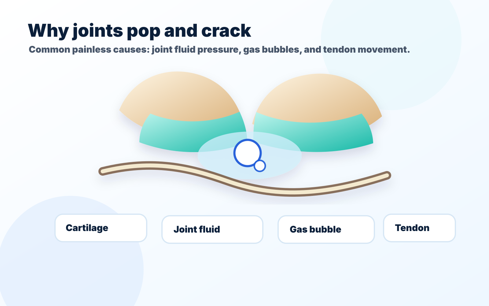
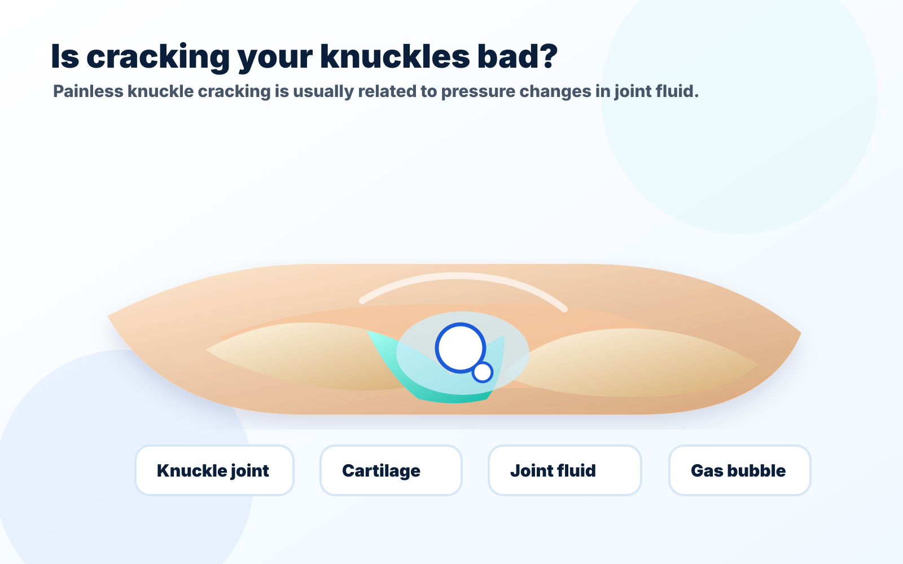

Featured Article
How Long Does It Take for a Bone to Heal?
Most patients want a clear timeline. This article explains the general phases of fracture healing, why x-rays matter, and why healing speed varies from person to person.
Clear, practical orthopedic answers from Dr. James Barnes for patients who want to understand bones, joints, injuries, imaging, arthritis, recovery, and when it makes sense to be evaluated.
Most patients want a clear timeline. This article explains the general phases of fracture healing, why x-rays matter, and why healing speed varies from person to person.
Each article is written to answer the common question first, then explain what symptoms matter and when an orthopedic evaluation may help.
Learn the general timeline for fracture healing and what can make recovery faster or slower.
Read article →
Learn why joints pop, crack, click, or snap — and when the sound should be checked.
Read article →
A simple answer to one of the most common hand and joint questions.
Read article →Simple orthopedic questions patients commonly search for next.
Recovery timelines, x-rays, casts, boots, CT, MRI, and when follow-up imaging matters.
Common symptoms explained in plain language.
Have an orthopedic question you want answered in a future article or short video? Send it in. Please keep it general and do not include private medical details, imaging, or urgent medical concerns by email.
The Bone Blog is educational. If pain, injury, or function is limiting your activity, a clinic visit can help clarify what is going on.